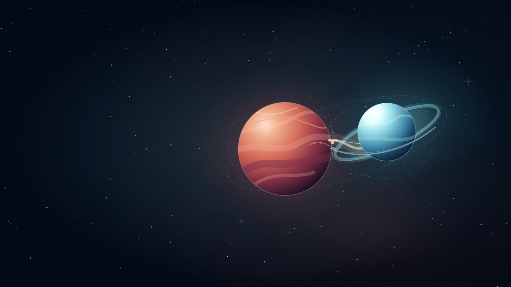

Dwie gwiazdy.
Jeden los.
Na niebie widzimy jeden punkt. W rzeczywistości mogą kryć się w nim dwa słońca. Krążą wokół siebie, zasłaniają się nawzajem, a czasem jedna gwiazda oddaje drugiej część własnej materii. Tak zaczyna się opowieść o kosmicznym tańcu, który potrafi odmienić całe życie gwiazdy.
Gwiazda, która regularnie znikała.
Przez większość nocy Algol wygląda jak zwykła, dość jasna gwiazda w gwiazdozbiorze Perseusza. Ale co około 2 dni i 21 godzin wyraźnie słabnie. Po kilku godzinach wraca do swojej zwyczajnej jasności. I powtarza to raz za razem.
W tradycji astronomicznej Algol zyskał miano „Gwiazdy Demona”. Jego zmienność była tak osobliwa, że w XVII wieku zwrócił na nią uwagę Geminiano Montanari. W latach 1782–1783 młody astronom John Goodricke wraz z Edwardem Pigottem badał te spadki jasności i ustalił ich regularny rytm. Goodricke zaproponował, że przed jaśniejszą gwiazdą przechodzi inny obiekt i okresowo zasłania jej światło. [1]
To był niezwykle ważny krok: zamiast uznać zmienność za kaprys gwiazdy, wyjaśniono ją ruchem dwóch ciał. Spektroskopia później potwierdziła, że Algol należy do układu gwiazd krążących wokół siebie. Dziś wiemy, że cały system jest potrójny, ale za słynne, szybkie zaćmienia odpowiada jego bliska para. [1, 2]
Odstęp między głębokimi spadkami jasności w ciasnej parze. To okres orbitalny, a nie czas „wyłączania się” gwiazdy.
Nie musisz wierzyć opowieści.
Możesz zobaczyć pomiar.
Na wykresie z danych kosmicznego teleskopu TESS regularnie powtarzają się wąskie spadki blasku Algola. To ślad rzeczywistych zaćmień, a nie ilustracja wymyślona do laboratorium.
 ZAOBSERWOWANE · NIE SYMULOWANE
ZAOBSERWOWANE · NIE SYMULOWANEPionowe spadki na wykresie oznaczają słabszy sygnał. W skali wielkości gwiazdowych większa liczba oznacza mniejszą jasność — dlatego minimum blasku występuje na wykresie niżej. To rzeczywista obserwacja, ale wciąż nie „zdjęcie dwóch gwiazd”.
NASA TESS / MAST, za NASA Night Sky Network; opis obserwacji i autorstwa. Jeśli obraz nie zostanie załadowany, otwórz oryginalny wykres.Dlaczego niektóre zaćmienia są głębsze, a inne płytsze? Czy obie gwiazdy muszą mieć taką samą temperaturę i jasność?
NA NIEBIE JEDEN PUNKT — W PRZESTRZENI DWA ŚWIATY
Nie ma gwiazdy, która tylko stoi i czeka.
Obie gwiazdy krążą wokół wspólnego środka masy. Ich ruch zależy od mas oraz odległości. Im ciaśniejsza orbita przy tej samej łącznej masie, tym krótszy okres obiegu. To jedna z konsekwencji praw Keplera.
Jeśli patrzymy niemal w płaszczyźnie ich orbity, jedna gwiazda może na chwilę zasłaniać drugą. Wtedy suma widzianego światła maleje. Gdy patrzymy bardziej z góry, gwiazdy na niebie mijają się obok siebie — i głębokich zaćmień może w ogóle nie być. [3]
Blask dwóch gwiazd dociera do teleskopu.
Chłodniejszy składnik zasłania część jaśniejszego.
Zmienia się, którą gwiazdę widzimy z przodu.
A TERAZ HISTORIA STAJE SIĘ JESZCZE CIEKAWSZA
Czasem jedna gwiazda zaczyna oddawać siebie drugiej.
W ciasnym układzie grawitacja obu składników oraz ruch orbitalny wyznaczają obszary nazywane płatami Roche’a. To nie są niewidzialne szklane bańki, lecz granice opisujące efektywny potencjał grawitacyjny w układzie obracającym się razem z gwiazdami.
Kiedy gwiazda rozrasta się na tyle, że wypełnia swój płat Roche’a, gaz z jej zewnętrznych warstw może przepływać przez wewnętrzny punkt Lagrange’a — L1 — w kierunku towarzysza. Część materii może trafić bezpośrednio na drugą gwiazdę, a w odpowiedniej geometrii utworzyć dysk akrecyjny. [4, 5]
Strumień jest tu metaforą przepływu. Rzeczywisty transport gazu zależy od hydrodynamiki, temperatury i momentu pędu; płaty są poglądowymi przekrojami powierzchni ekwipotencjalnych.
W takim układzie gwiazdy nie tylko się okrążają. Mogą zmieniać wzajemnie swoje masy, rozmiary i przyszłość.
Dlaczego mniejsza gwiazda wygląda na starszą?
W pojedynczych gwiazdach masywniejsze składniki zwykle szybciej zużywają paliwo jądrowe i wcześniej opuszczają ciąg główny. Tymczasem w bliskiej parze Algola chłodniejszy, dziś mniej masywny składnik jest już bardziej ewolucyjnie rozwinięty od gorętszego, obecnie masywniejszego towarzysza. [2, 6]
Rozwiązaniem jest historia wymiany materii. Gwiazda, która dawniej była masywniejsza, ewoluowała szybciej, rozrosła się i przekazała znaczną część materii drugiemu składnikowi. Po tej wymianie mas role odwróciły się. Z dzisiejszych mas nie można więc po prostu odczytać, która gwiazda miała większą masę na początku.
Algol nie jest dokładnym odpowiednikiem każdego układu podwójnego — i ma jeszcze dalszego, trzeciego towarzysza. Ale jego wewnętrzna para pięknie pokazuje, dlaczego w astrofizyce liczy się wspólna historia, a nie tylko pojedyncza gwiazda.
Szybsza ewolucja i rozszerzanie zewnętrznych warstw.
Donor pozostaje bardziej wyewoluowany, mimo że jest lżejszy.
Nie jesteśmy skazani wyłącznie na domysły.
Oprócz jasności mierzymy prędkości gwiazd, badamy widma i wykorzystujemy interferometrię. Tak można sprawdzić, jak naprawdę wygląda złożony układ, który z Ziemi wydaje się jednym punktem.
Zmierz rytm zaćmień
Seria pomiarów jasności odkrywa regularne minima i okres obiegu. Algol zyskuje w ten sposób swoją „sygnaturę” w czasie.
Zobacz dane TESSZobacz gaz wokół gwiazd
Interferometria pozwoliła rozdzielić składniki układu β Lyrae i zidentyfikować obszar dysku wokół gwiazdy przyjmującej materię.
Zobacz obserwacje β LyraePołącz orbitę z wykresem
Wizualizacje NASA zestawiają geometrię hipotetycznych układów zaćmieniowych z ich krzywymi blasku.
Porównaj różne układyZAMIEŃ OPOWIEŚĆ W DOŚWIADCZENIE
Zatrzymaj ten taniec.
Zmień jego zasady.
W naszym laboratorium ustawiasz masy dwóch składników, odległość między nimi, charakter towarzysza, kąt widzenia i stopień wypełnienia płata Roche’a. Zobaczysz, jak zmienia się okres orbitalny, kiedy pojawiają się zaćmienia i przy jakim ustawieniu model pokazuje przelew materii.
Spraw, żeby zaćmienia zniknęły
Zmniejsz nachylenie do obserwatora. Co stanie się z krzywą blasku, gdy oglądasz orbitę prawie z góry?
Przekrocz granicę 100%
Zmień „Wypełnienie Roche’a” z 90% na ponad 100%. Sprawdź stan układu i miejsce punktu L1.
Rozsuń gwiazdy
Przy tych samych masach zwiększ odległość środków. Czy okres orbitalny rośnie, czy maleje?
Zmień naturę drugiej gwiazdy
Porównaj zwykłą gwiazdę, białego karła i gwiazdę neutronową. Zwróć uwagę na ograniczenia wizualnego modelu.
Uwaga naukowa: laboratorium oblicza kołowy ruch Keplera, położenie punktu L1, przybliżenie promienia Roche’a i geometryczne zmiany jasności. Animowany strumień i dysk nie są obliczeniami hydrodynamicznymi ani przewidywaniem rzeczywistego tempa transferu masy. Presety nie przedstawiają wiernych parametrów Algola.